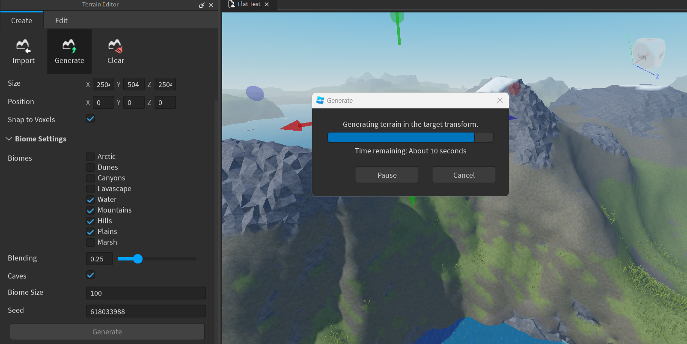
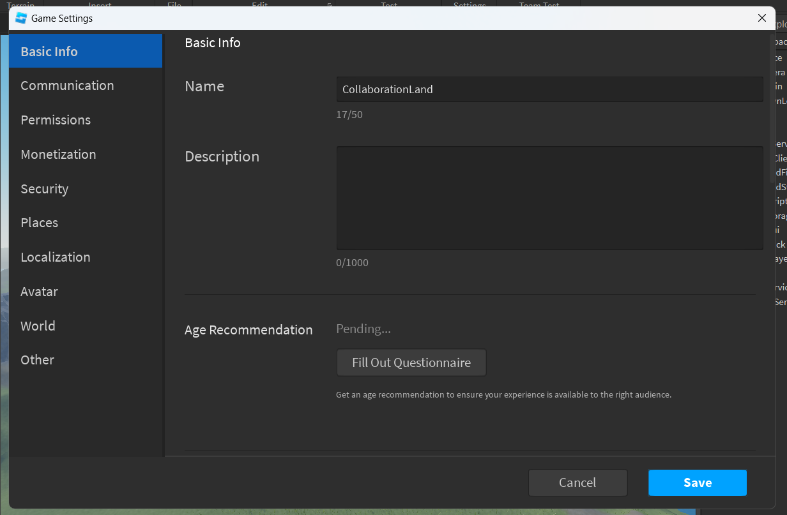
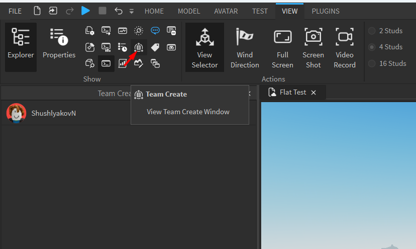
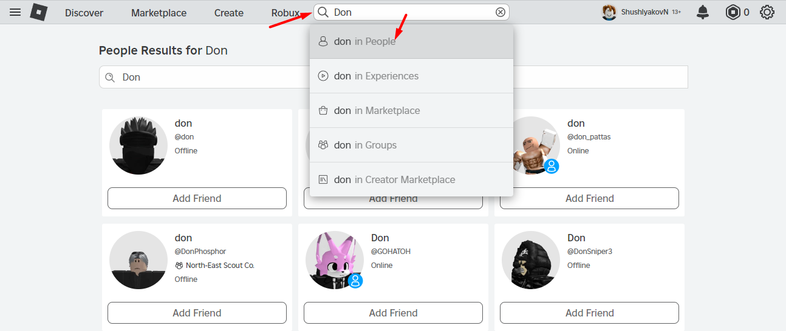
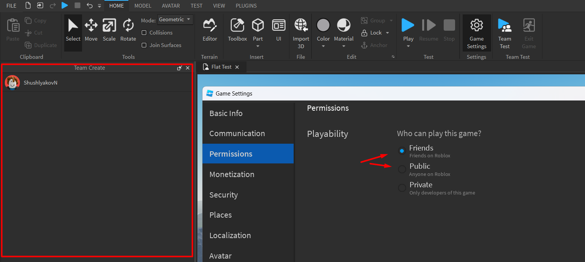
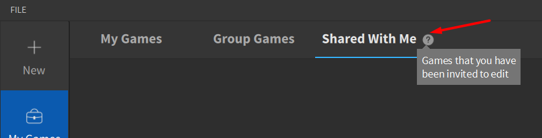
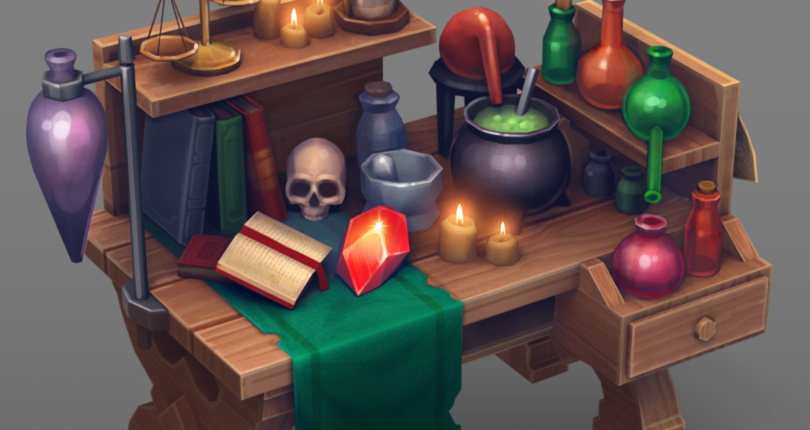

Создание игр в Roblox Studio
Создание общего проекта
Подготовка проекта для командной работы
Это крайнее занятие модуля, посвящённого изучению профессии художника по окружению, и в нем необходимо научиться объединять разработчиков в один общий проект, и закрепить все полученные за прошедшие три занятия знания в общей практической работе.
Готовим карту для общего проекта
Создадим новую игру на основе шаблона Flat Terrain. Удалим уже существующий ландшафт и сгенерируем новый. Учитывая то, что на карте будут работать сразу несколько разработчиков, сделать карту нужно достаточно большой.
После этого необходимо добавить в созданный проект всех разработчиков. Опубликовать игру.
После успешной публикации, перейдем в меню View, активируем окно Team Create и нажмем в нем на кнопку Turn On.
После этого игра перезагрузится, и мы сможем добавить к ней других разработчиков.
Создаем команду для игры
Следующим шагом необходимо добавить учетные записи всех разработчиков в список друзей на сайте Roblox и подтвердить добавление в друзья.
Каждый разработчик должен открыть браузер, перейти на сайт roblox.com и войти в свои учетные записи. В окне поиска надо найти никнейм того, кто держит карту (хост) в разделе Рeople и добавить его в друзья. После этого надо подвердить дружбу. Теперь у хоста будет возможность добавить всех участников к списку разработчиков созданной игры.
Откроем проект и в окне Team Create найдем ссылку на раздел с добавлением новых разработчиков (Home-Game Settings-Permissions). В открывшемся окне последовательно добавим всех участников через окно поиска, вводя их никнеймы и устанавливая права доступа Edit.
Задание на командную работу
После того, как все настройки были выполнены, всем разработчикам необходимо перезапустить Roblox, перейти в главное окно во вкладку My Games в раздел Shared With Me и найти наш проект.
Получаем задание и обсуждаем командную работу
Всем разработчикам необходимо выполнить подключение к нашему проекту.
Используя навыки, полученные в предыдущих занятиях, необходимо привести ландшафт в этой игре к интересному и законченному виду.

Знакомимся с принципами сторителлинга
Сторителлинг в играх — это процесс создания историй для компьютерных игр.
Он включает в себя:
- Придумывание основного сюжета. Он должен включать отправную точку, конфликт, злодея или противника и развязку.
- Создание персонажей. Они должны быть правдоподобными, с богатой предысторией и естественными мотивами.
- Создание сеттинга. Мир должен быть правдоподобным и интересным, создавать ощущение погружения и исследования.
- Написание диалогов и повествования. Они должны быть естественными, но убедительными и вовлекать игроков в мир игры.
Локации любой игры должны быть не просто красивыми, но ещё и рассказывать какую-то историю:
При помощи размещения различных предметов (ассетов) на локации, мы можем рассказать игроку о том, что происходило в этом месте, даже без использования сюжетных вставок и диалогов.
Например, разбросав различные предметы, мы можем указать на произошедшую ранее драку. Стол со склянками и книгами укажет на то, что в помещении жил алхимик или учёный. Скелет воителя около сундука и черепа драконов вокруг укажут на неудачно закончившуюся драку за сокровище.
Благодаря сторителингу локации приобретают эмоциональную составляющую и "общаются" с игроком через визуальные образы, становясь намного более интересными и запоминающимися.
Нужно определиться с локациями. Можно придумать свои или реализовать что-то из предложенного:
- Пещера контрабандистов
- Пристань с кораблями
- Гора с пещерой мудреца на вершине
- Водопад в лесу
- Покинутое поле боя
Практика работы над проектом
Распределим роли в команде, задачи и приступаем к творческому процессу!
Домашкаа 😁
Это завершающее занятие третьего модуля, поэтому в качестве домашнего задания предстоит пройти тест на знания, полученные за последние 4 занятия.
-
Какое окно позволяет работать с ландшафтом?
- Properties
- Terrain Editor
- Output
-
Какого инструмента работы с ландшафтом нет в Roblox
- Extrude
- Sea Level
- Replace
-
Какой инструмент позволяет выровнять участок ландшафта:
- Smooth
- Add
- Flatten
-
Что такое точка интереса?
- Локация, издалека привлекающая внимание игрока
- Финальная точка маршрута игрока
- Интересная точка на карте
-
Как правильно вести игрока по маршруту на карте при помощи работы с ландшафтом?
- Указывать направление с помощью элементов окружения
- Сделать тропу из стартовой локации в финальную
- Ограничить передвижение игрока естественными преградами (горы, обрывы, заросли деревьев и т.д.)
- Все варианты верны
-
Как называется плагин для высадки растительности на карте?
- TreePlanter
- FoliageTool
- BrushTool
-
Какие объекты может размещать на карте BrushTool?
- Только деревья
- Деревья, кусты и траву
- Любые объекты
-
Какие параметры отвечают за размер и плотность высадки объектов?
- Radius и Spacing
- Scale и Spacing
- Spacing и Wobble
-
Как называется процесс рассказа истории через окружение?
- Сторителлинг
- Сторибилдинг
- Сторидизайн
-
В чем заключается работа художников по окружению?
- Создание красивого ландшафта и растительности на уровне
- Сборка красивых локаций из уже готовых предметов
- Выстраивание маршрута движения игрока по карте
- Все вышеперечисленное